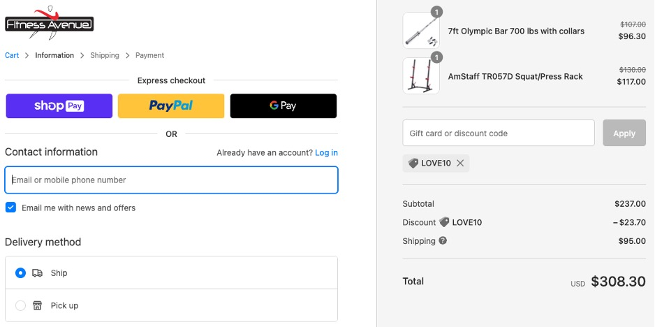

UI Web Browser testing on TDD framework using Selenium
- Website Tested: https://www.fitnessavenue.ca
- Source Code Management Tool: Github via SourceTree
- IDE: IntelliJ IDEA CE
- Language: Java
- Automation Testing Tool: Selenium WebDriver
OVERVIEW
PROJECT
This project is using TDD framework to test whether the web browser is functioning correctly. For instance, users can get a discount when using a valid coupon code on their order. So, I wrote a process flow that would shop with LOVE1o code to get the 10% discount.
- Unit Testing Framework: TestNG – to control flow and assert data
- Maven - to manage dependencies and also run the tests as mvn goals from terminal
- Page Object Model (POM) – to create an object repository for storing all web elements. Each web page of an application is considered a file class and each class file contain only corresponding web page elements. It helps to Readability and reliability of scripts, Code Reusability, and Easy Maintenance
- Page Factory – using @FindBy to locate and declare web elements using different locators
- Utilities package – to reuse utility classes that can be used across different classes of the framework. For example
- property file – to maintain the input data in the test scripts. In this file, data is stored as Key-Value pairs, so we can access any data in this file by using the key
- xml file – to easily control the execution of tests by only putting all the test cases together and running them under one file
FRAMEWORK DESIGN
- BaseClass - to share the web driver instance between different classes (Singleton Driver)
- CommonMethods – to store the methods used across the project
- Constants - to store the fixed data that code into my test scripts
- Listeners – to log and report that can come in handy to debug failures in the script at any later stage
- PageInitializer – to initialize the Page Objects
- Abstraction: In PageObjects package, I write locators and methods in Page Class. These locators can be utilized in tests but the implementation of the methods can’t be seen. That means the implementations of the locators were hidden from the tests.
- Interface: One sample using Interface is “WebDriver driver = new ChromeDriver();” in my BaseClass, I use Selenium WebDriver to initialize Chrome browser. It means I created a reference variable (driver) of the interface (WebDriver) and created an Object. Here WebDriver is an Interface and ChromeDriver is a class.
- Inheritance: I create a Base Class in the Automation Framework to initialize WebDriver interface, WebDriver waits, and Property files, in the Base Class. Then, I extend the BaseClass in PageInitializer class, extend PageInitializer class in CommonMethods class, and then extend CommonMethods in other classes such as Page classes and Test classes to acquire the instance variables and functionalities of another class that has been extended.
- Encapsulation: To bind code and variables together in a single unit, In Page Object Model classes, I declare the data members using @FindBy and initialization of data members will be done using Constructor to utilize those in methods.
- Polymorphism: To perform a task in multiple ways, I use the combination of Method Overloading such as Implicit wait to use different time stamps, and Method Overriding such as get and navigate methods of different drivers.